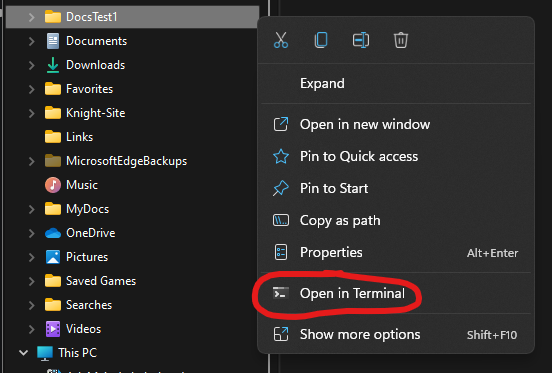

Creating a Personal Documentation Website
My first documented project on this website will, ironically, be detailing exactly how I created this website. My goal is to have a comprehensive enough outline that anyone else could follow my steps exactly, and create a website of their own if they want.
Overview
At the most basic level, this website is built using a static site generator called MkDocs, which you can find more information about here. MkDocs reads files in markdown, a type of text formatting syntax, and then converts those files into a static site that can be hosted elsewhere. In the case of this website, that static site is then being hosted by GitHub Pages, so that anyone, anywhere, can read and enjoy it.
Software Installation
Installing Python
Before I could do anything else, I had to install the necessary software onto my personal computer, which turned out to be surprisingly easy. The first step was to download and install the most recent version of Python, which I got through this link.
After Python was installed, I then wanted to make sure that Pythons package installation manager "Pip" had also been installed correctly. It should be installed by default along with Python, but I wanted to be sure, and I checked for this by running the following command in my computer's command prompt. (Unsure of what the command prompt is? You can get a basic overview of what it is and how to use it here)
py -m ensurepip --upgrade
You should see something in your command prompt that looks like the above image, with a message saying something like "Requirement Already Satisfied" towards the end.
Installing MkDocs
Up next was to repeat basically the same process that I used for Pip, but for MkDocs instead (and this time, using Pip to do it). Though it was a bit redundant, I ran the following command in the command prompt, and once again searched for that "Requirement Already Satisfied" message.
py -m pip install mkdocs
And lastly, here is another command that you can run if you want to be extra sure.
py -m pip install --upgrade mkdocs
One thing that I particularly like about MkDocs is its ability to let you use custom themes when creating your website. Themes will change the general look and layout of the site, and I'll go into more detail on how to implement them further on in this guide, but for now let's just install one.
I used the following command to install the "windmill" theme. You're welcome to use this theme for your own site if you want, or you can browse through a whole list of available custom themes here, and select one that you like better.
py -m pip install mkdocs-windmill
Installing Git
To see if you already have git installed on your computer, you can run this simple command in the command prompt.
git version
If git is already installed, the output will tell you what version you currently have. If git is an "unknown command" then you need to install it, for which the download can be found here.
Git is the last necessary installation that you will need. If you want to get straight into making your site, you can skip the next section, but I went ahead and installed two more programs as well that help with general QOL while documenting.
Installing GitHub Desktop and Visual Studio
These installs are honestly pretty simple. You'll learn more about why I use them in the future, but for now you'll want to just go ahead and install GitHub Desktop as well as Microsoft Visual Studio Code, the links for which can be found here and here.
Building The Site
Finally done with installs, the next step is to actually build the website. Now that may sound daunting, but this is where MkDocs shines, because it makes things surprisingly easy.
The first step in this process is to open the command prompt as usual, and type in the following command. It's important to note here that you dont necessarily have to call this site "DocsTest1", that's just what I chose for this example. You could replace the text there with any name that you like.
py -m mkdocs new DocsTest1
From here, you'll have to do a bit of file navigation before getting to the next step. Open up your file explorer, and paste in the following path at the top to locate the folder that MkDocs just created.
C:\Users\-----\DocsTest1
You'll have to replace the dashes with whatever your username is on your computer. As an example, in my case, the exact path looks like "C:\Users\Willi\DocsTest1".
This should take you straight into the new folder. Next, you want to locate the same folder on the left sidebar, and right click that folder, which brings up a menu with the option to "Open in Terminal". There's an example image below which should make finding things a bit easier, but basically once you're at that menu, you need to click "Open in Terminal" to continue from here.

At this point, you may notice that you are now working in the Windows Powershell environment rather than the command prompt. While the capabilities of the two environments are actually quite different, in our case, we will be working with them in functionally the same way.
Before we do anything else, let's first see what the website looks like in its most basic form. If you run the following command in powershell, your site will be launched in a local web server, running on port 8000. You can take the http link that the command outputs towards the end, and paste that into any web browser on the same computer.
py -m mkdocs serve
Things are gonna look pretty basic at first, but it's a start. In the future, I'll explain how I customized my site more, but for now let's move on to hosting it publicly for anyone to see.
Hosting The Site
Currently Under Construction
Customizing the Site
Currently Under Construction